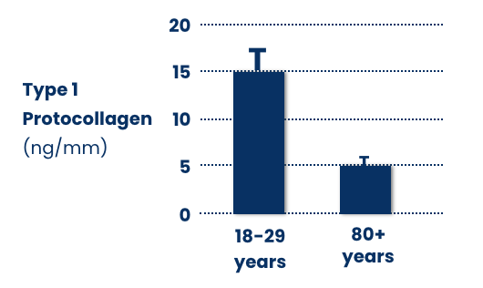
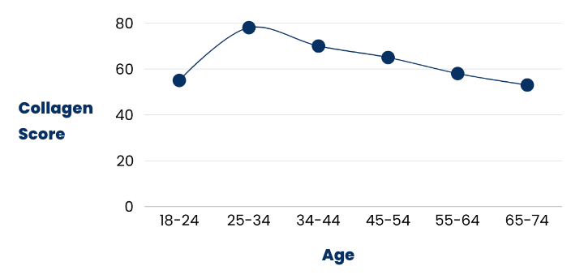
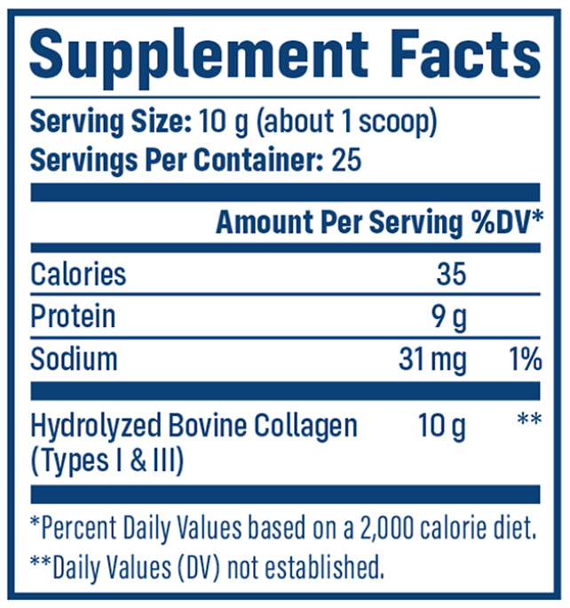
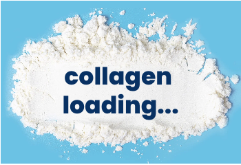
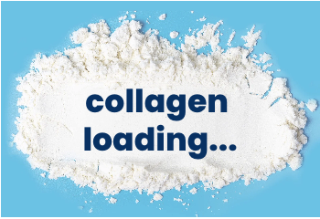

Frequently Asked Questions
Q.) How many jars should I order?
Our best value and most popular quantity is our 6-jar package, which
offers an unbeatable of just $21 per jar (retails for $37.99 per jar).
At the normal retail price, this package would cost $227.94, but
through this special page, you can take advantage of our limited-time
up to 45% OFF discount and get 6 jars for a total of just $126.
That’s a massive savings of over $101.
You will also receive a FREE handheld frother and FREE shipping as
part of our limited-time Fall Sale.
Plus, with a 6-jar supply, you will have plenty of collagen to take 2
or more scoops per day without worrying about running out.
By consistently taking NativePath Grass-Fed Collagen each day, you can
help replenish your body’s collagen levels. Continued daily use will
then help support your joints, bones, skin, hair, nails, and more.
Q.) How many servings are in each jar?
Each full-size jar of NativePath Grass-Fed Collagen contains 25
servings.
Q.) Where does NativePath Grass-Fed Collagen come from?
NativePath Grass-Fed Collagen is sourced from pasture-raised cattle in
South America.
NativePath Grass-Fed Collagen is sourced from pasture-raised cattle in
South America.
NativePath Grass-Fed Collagen is manufactured in the USA and contains
zero ultra-processed ingredients. That means no artificial
preservatives, flavors, dyes, sugar, seed oils, gluten, or GMOs.
Q.) How many times per day should I take collagen?
Based on feedback from our customers, 10 to 20 grams (or more) of
collagen per day can provide the greatest age-defying joint, bone,
skin, hair, and nail benefits. We recommend taking at least 20 grams
(2 scoops) daily for maximum results.
This might be especially helpful for people over the age of 50, whose
collagen levels may have already declined by a staggering 50% (or
more).
Taking multiple scoops per day may help restore your collagen deficit
so that full results can be achieved.
Since NativePath Grass-Fed Collagen has no taste or odor, adding
multiple scoops to your diet has never been easier. Simply add
NativePath Grass-Fed Collagen to your coffee or tea, smoothie, juice,
or unsweetened almond milk, or even add it to your yogurt, oatmeal,
soup, or baked goods.
Q.) What is the best way to use this product?
The easiest way to use NativePath Grass-Fed Collagen is to mix a
serving into 8-12 oz of any hot or cold beverage and gently stir.
Q.) How long do I have to use this product before I see results?
Many of our customers notice results as early as their first week with
NativePath Grass-Fed Collagen.
However, more profound results are reported with regular prolonged
use. This is why we recommend stocking up with the 6-jar package so
that you can experience the full benefits of long-term collagen use
without the risk of running out.
Q.) What is collagen, anyway?
Collagen is the most abundant protein in your body, accounting for
about a third of its protein composition. It's one of the major
building blocks of joints, bones, skin, hair, nails, muscles, tendons,
and ligaments. Collagen is also found in many other body parts,
including our gut lining, blood vessels, corneas, and teeth.
Q.) Why should I add collagen to my diet?
While our bodies are fully equipped to produce collagen naturally,
once we hit our twenties, it begins to decline by 1-1.5% per year.
In fact, one study looked at type I collagen in the skin of old
individuals versus young folks and found that collagen synthesis was
decreased by 68% in old skin versus young skin*.

If you’ve ever wondered why our skin begins to sag and wrinkle as we
get older – it’s likely that low collagen levels are behind it.
This is because as you age, your body produces less collagen. The
effects, such as achy joints, bone loss, wrinkled skin, and brittle
nails, may become noticeable after several years.

Fortunately, research has shown that by adding a high-quality collagen
supplement to your diet, you can provide your joints, bones, hair,
skin, and nails with the support required to promote vibrant health at
any age.
Q.) How will this product be shipped to me and how quickly?
You can expect to receive your order within 7-10 business days.
Q.) What are the ingredients in NativePath Grass-Fed Collagen?
The only ingredient in NativePath Grass-Fed Collagen is hydrolyzed
bovine collagen.

Q.) Is it really safe to order this product from this online website?
Yes, we are 100% committed to ensuring that your information is safe
and secure. To prevent security holes, we have put in place suitable
physical, electronic, and managerial procedures to safeguard and
secure your shopping experience so that you can order with confidence.
Q.) What if this product doesn’t work for me?
Many of our customers begin to see and feel a difference shortly after
adding NativePath Grass-Fed Collagen into their diets. However, we
want to make sure there’s absolutely no risk involved when it comes to
investing in any of our NativePath products. If you don’t feel the
difference or if you are not 100% satisfied for any reason, you may
return unopened products from your most recent order to us within 365
days of the day they are delivered to your door. You can also keep
your FREE gift. Simply call our friendly Customer Care Center
toll-free at 1(800) 819-2993 for assistance.
Q.) How long will this sale last?
Our Fall Sale lets you stock up on NativePath Grass-Fed Collagen for
as low as $21 per jar. It also includes a FREE handheld frother plus
FREE shipping.
However, we can not guarantee this special deal will last all Fall
long. Once we run out of frothers, the sale will be deactivated.
So, if you’re even slightly curious about what NativePath Grass-Fed
Collagen can do for you, this is your chance to stock up at our lowest
available price.
If you’re ready to experience the results that thousands of other
people have been raving about, act now.
Simply click the button below.
Try Risk Free
365-Day Money Back Guarantee
About Dr. Chad Walding & NativePath
Doctor of Physical Therapy and Co-Founder of NativePath
Living on The Path means following a lifestyle that supports your
health naturally – and we believe The Path starts with nutrition.
While our ancestors lived, moved, and ate in alignment with
nature, in our modern world, we’ve lost touch with our natural way
of being.
It is our mission to make whole-food nutrients more accessible
through our supplements and health education. Every NativePath
product is thoughtfully designed to help you restore nutritional
gaps in the modern diet.
That's why we started NativePath – to help people get back on The Path
to eating, moving, and living vibrantly.


 From The Date of Delivery
From The Date of Delivery
 Safe & Secure Checkout
Safe & Secure Checkout
 FREE Shipping On ALL U.S Orders
FREE Shipping On ALL U.S Orders


 
